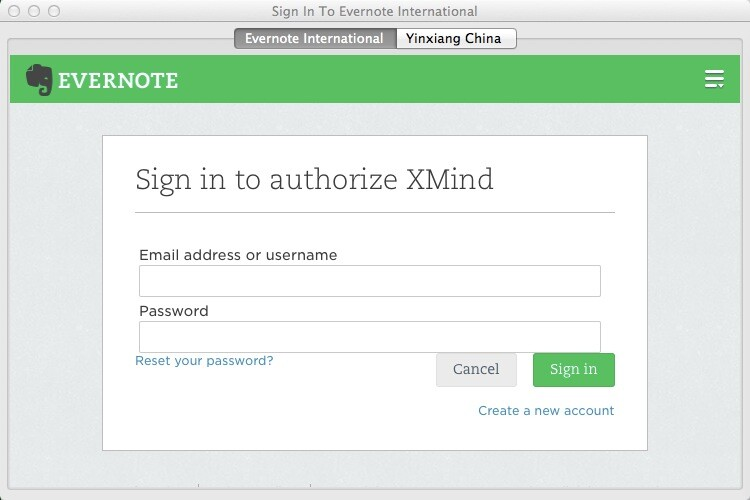
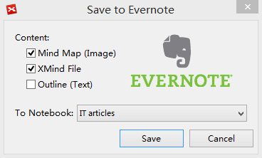
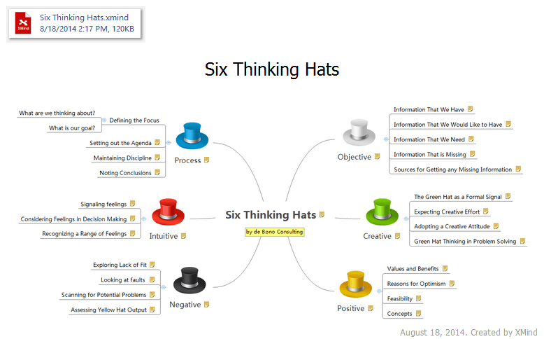

Evernoteへ保存
XMind 使用し、1 つのマインドマップを、テキスト、添付ファイル、イメージとして、Evernote アカウントに簡単に保存することができます。この方法で XMind ファイルを Evernote を介して、異なるコンピューター間で同期し、モバイル デバイス上でチェックすることもできます。
- まずマインド マップを完成させます。
- メニューの「ファイル → Evernoteへ保存」を選択します。
- XMind から Evernote アカウントへのアクセスを承認する ⇥⇥
- 作成するコンテンツの内容と、保存先のノートブックを選択します。 ⇥⇥
- 操作を完了させるために[保存]をクリックします、その後 Evernote で結果を表示することができます。 
PS : アカウントへの承認プロセスは、この機能を初めて使うときに要求されます。